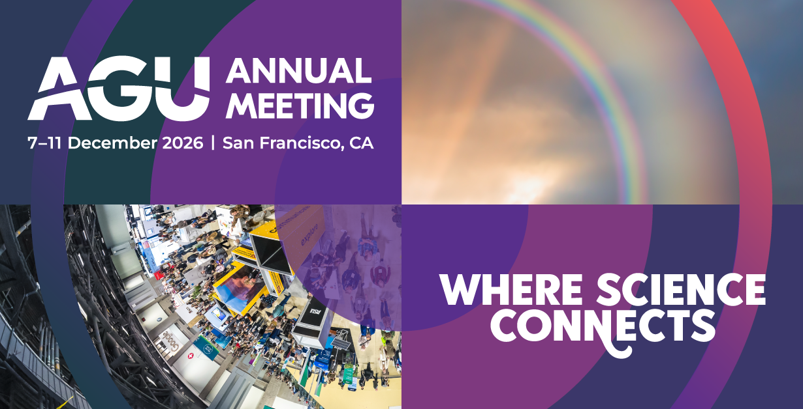
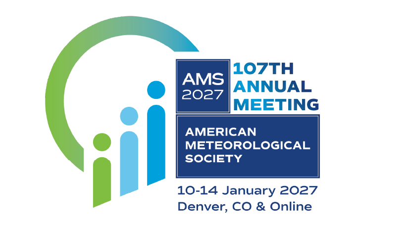
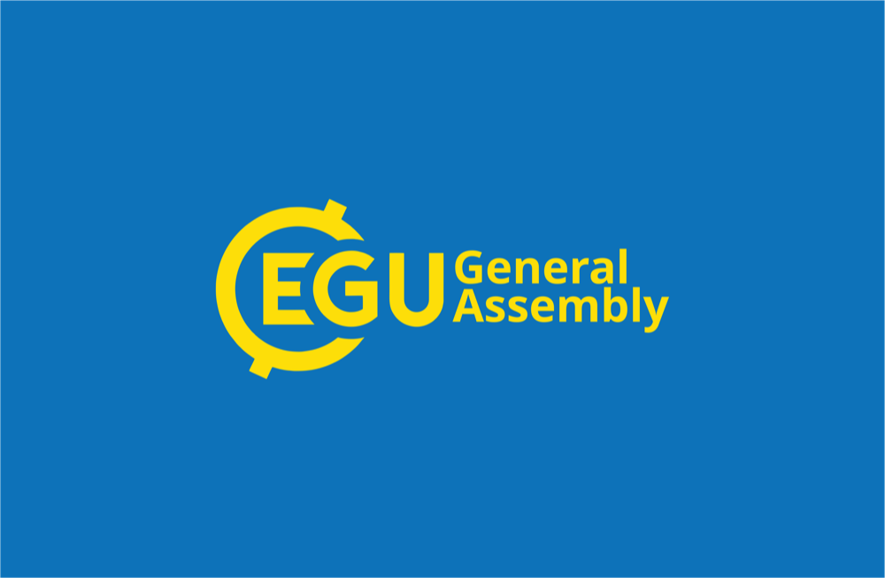

News & Events
-

AGU26 Annual Meeting
7–11 December 2026 · San Francisco, California
The program spans ocean and atmospheric sciences. The standard registration rate is available through 6 December.
Visit the AGU26 meeting site -

AMS Conference on Air–Sea Interaction
10–14 January 2027 · Denver, Colorado
The conference covers waves and other processes at the air–sea interface, with sessions on coupled modeling and observations.
Visit the AMS conference site -

EGU General Assembly 2027
4–9 April 2027 · Vienna, Austria, and online
Abstracts are due 12 January 2027 at 13:00 CET.
Visit the EGU27 assembly site
About Us
At ORCA, we’re a team of researchers from several countries with a shared interest in how the ocean, atmosphere, and surface waves influence one another. We use satellite observations, in situ measurements, and coupled numerical simulations to study these interactions across a wide range of spatial and temporal scales.
Most of us are early-career researchers, and we work with the support and mentorship of senior colleagues. We bring that same approach to mentoring students in air–sea research, from undergraduates to PhD students.
Recent Publications
-

The role of cyclonic eddies in the detachment and separation of Loop Current eddies
Ocean Science · 2026
Marco Larrañaga, Julien Jouanno, Eric P. Chassignet, Giovanni Durante, Ilkyeong Ma, Julio Sheinbaum, and Lionel Renault
-

Assessing the Future ODYSEA Satellite Mission for the Estimation of Ocean Surface Currents, Wind Stress, Energy Fluxes, and the Mechanical Coupling between the Ocean and the Atmosphere
Remote Sensing · 2025
Marco Larrañaga, Lionel Renault, Alexander Wineteer, Marcela Contreras, Brian K. Arbic, Mark A. Bourassa, and Ernesto Rodriguez
-

Surface circulation in Todos Santos Bay, Baja California, México
Continental Shelf Research · 2024
R. Durazo, X. Flores-Vidal, R. Castro, F. J. Ocampo-Torres, J. Saavedra, I. Rodríguez-Padilla, and M. Larrañaga